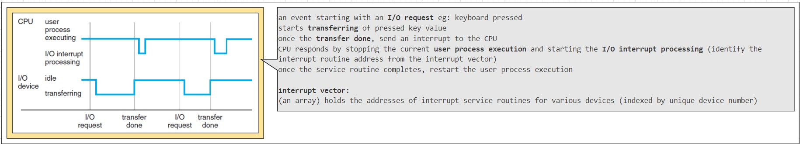
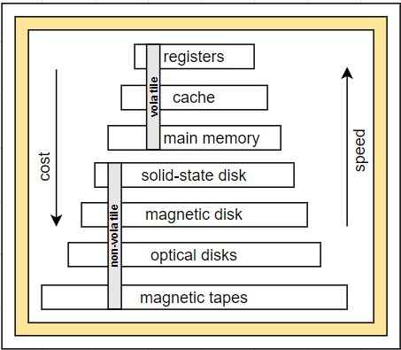
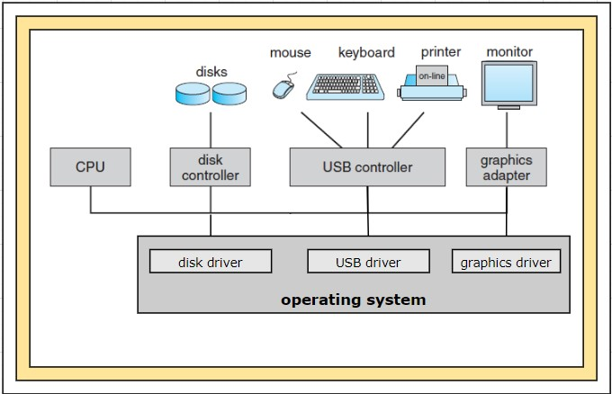
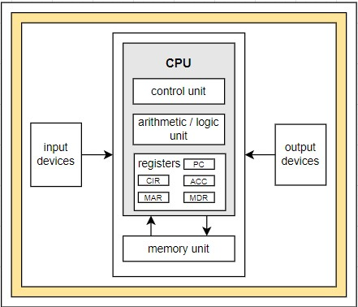
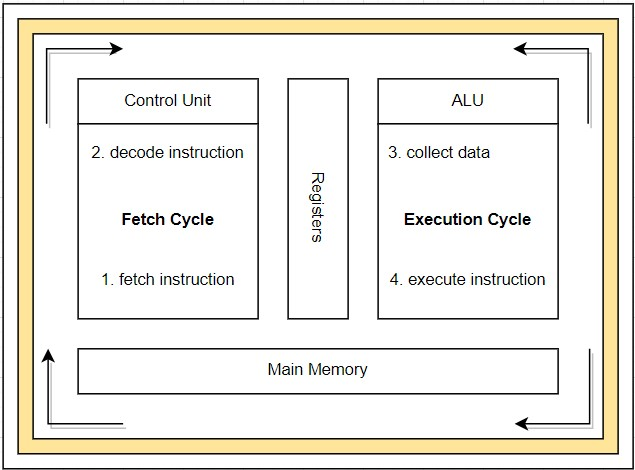
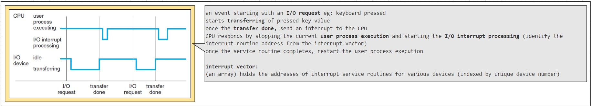
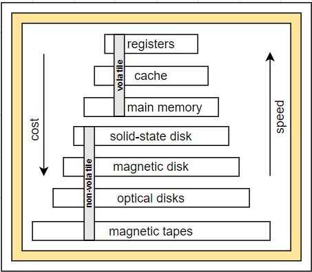
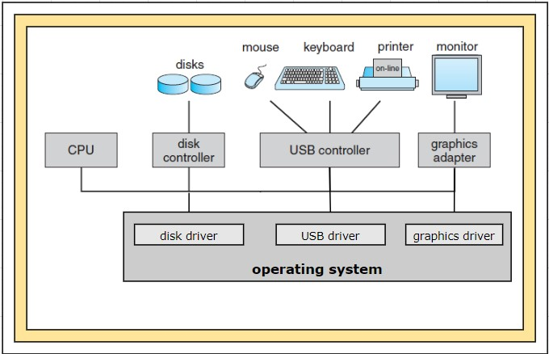
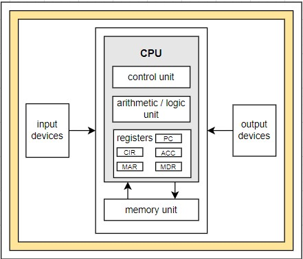
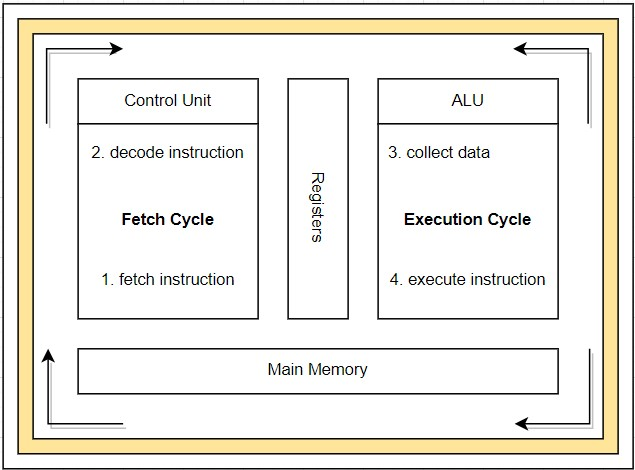

ജയകുമാർ നായർ തയ്യാറാക്കിയത്
introduction
 # what operating systems do
= a computer system can be divided roughly into four components
- hardware
- operating system
- application programs
- users
= operating system manages computer hardware, system programs, application programs and users
= an operating system acts as an intermediary between the user of a computer and the computer hardware
= operating system is the program running at all times on the computer called the kernel
= 2 other types of programs along with the kernel are
- system programs (associated with the operating system but are not necessarily part of the kernel)
- application programs (not associated with the operation of the system)
= mobile operating systems often includes a middleware (set of software frameworks provides services to application developers)
# computer-system organization
# what operating systems do
= a computer system can be divided roughly into four components
- hardware
- operating system
- application programs
- users
= operating system manages computer hardware, system programs, application programs and users
= an operating system acts as an intermediary between the user of a computer and the computer hardware
= operating system is the program running at all times on the computer called the kernel
= 2 other types of programs along with the kernel are
- system programs (associated with the operating system but are not necessarily part of the kernel)
- application programs (not associated with the operation of the system)
= mobile operating systems often includes a middleware (set of software frameworks provides services to application developers)
# computer-system organization
 = computer-system components
- a modern computer system consists of one or more CPUs and a number of device controllers connected through a common bus that provide access to shared memory
- each device controller is in charge of a specific type of device
- CPUs and device controllers can execute in parallel competing for memory cycles
- memory controller synchronizes access to the memory
= computer-system starting
- when a computer powered up or reboot the initial program to execute is bootstrap program
- typically this program is stored with in the computer hardware in ROM - readonly memory or firmware(EEPROM - electronically erasable programmable memory)
- the bootstrap program must locate the operating system kernel and load into memory
- the kernel starts providing services to the system and the users, some services are provided by few external programs
- these external programs are called system programs which is loaded to memory at boot time to become system process or daemons(in unix first daemon is 'init')
= devices and CPU communication(events)
- events are occurred through interrupt mechanism from either the hardware or the software
- hardware may trigger an interrupt at any time by sending a signal to the CPUs usually by way of system bus
- software may trigger an interrupt at any time by executing a special operation called a system call(monitor call)
- when a CPU is interrupted, it stops the current operation and transfers to a fixed location
- that fixed location contains the starting address of service routine for the interrupt
- on completion, the CPU resumes the interrupted computation

= storage structure

- all forms of memory provide an array of bytes and every byte has an address
- main memory mainly implemented in a semiconductor technology called DRAM-dynamic random access memory is called RAM
- SSD, solid state drive is a non-volatile memory and stores data in a DRAM array during normal operation but also contains a hidden magnetic hard disk and a battery
- when external power is interrupted the SSD's controller will copy data from RAM to disk so its becomes non-volatile. when the external power is restored controller copies the data back to RAM
- another non-volatile form is flash memory which doesn't require power to retain its contents and its a variant of EEPROM-electrically erasable programmable read-only memory
- another non-volatile form is NVRAM which is DRAM with battery power
= i/o structure

- every operating system have a device driver for each device controller
- device driver is a software program with which the device controller interacts with the operating system
- device controller is a hardware unit attached to the I/O bus and works like an interface between a device and a device driver
- device controller maintains some local buffer storage and a set of special purpose registers and it is responsible for moving the data between the peripheral devices and its local buffer storage
- each device controller is in charge of a specific type of device
- SCSI-small computer systems interface controller can attach to seven or more devices
- how data movement happens (small amount of data movement)
. device driver loads instructions to appropriate registers on the device controller
. device controller examines the contents of these registers to determine what action to take(like read)
. if its read instruction, device controller starts the transfer of data from the I/O device to its local buffer
. once the transfer completes, device controller informs the device driver via an interrupt that it has finished the operation
. device driver then returns control to the operating system and load data to memory
- how data movement happens (bulk data movement)
. device controller populate local buffers and transfers bulk of data to and from directly to memory
. this movement does not involve CPU and its called direct memory access(DMA)
# computer-system architecture
= execution of instructions
- Von Neumann architecture was first published by John von Neumann in 1945

- it is based on the stored-program computer concept, where instruction data and program data are stored in the same memory
- interaction with CPU and memory unit is achieved through load and store instructions to specific memory addresses
- load - from main memory to internal registers within the CPU
- store - from internal registers to main memory
- need arises, CPUs explicitly loads instructions from main memory for execution
- instructions are processed via fetch-execute cycle
- CPU can load instruction only from main memory(RAM-random access memory)

operating-system structure
operating-system operations
process management
memory management
storage management
protection and security
kernel data structures
computing environments
open-source operating systems
summary
= computer-system components
- a modern computer system consists of one or more CPUs and a number of device controllers connected through a common bus that provide access to shared memory
- each device controller is in charge of a specific type of device
- CPUs and device controllers can execute in parallel competing for memory cycles
- memory controller synchronizes access to the memory
= computer-system starting
- when a computer powered up or reboot the initial program to execute is bootstrap program
- typically this program is stored with in the computer hardware in ROM - readonly memory or firmware(EEPROM - electronically erasable programmable memory)
- the bootstrap program must locate the operating system kernel and load into memory
- the kernel starts providing services to the system and the users, some services are provided by few external programs
- these external programs are called system programs which is loaded to memory at boot time to become system process or daemons(in unix first daemon is 'init')
= devices and CPU communication(events)
- events are occurred through interrupt mechanism from either the hardware or the software
- hardware may trigger an interrupt at any time by sending a signal to the CPUs usually by way of system bus
- software may trigger an interrupt at any time by executing a special operation called a system call(monitor call)
- when a CPU is interrupted, it stops the current operation and transfers to a fixed location
- that fixed location contains the starting address of service routine for the interrupt
- on completion, the CPU resumes the interrupted computation

= storage structure

- all forms of memory provide an array of bytes and every byte has an address
- main memory mainly implemented in a semiconductor technology called DRAM-dynamic random access memory is called RAM
- SSD, solid state drive is a non-volatile memory and stores data in a DRAM array during normal operation but also contains a hidden magnetic hard disk and a battery
- when external power is interrupted the SSD's controller will copy data from RAM to disk so its becomes non-volatile. when the external power is restored controller copies the data back to RAM
- another non-volatile form is flash memory which doesn't require power to retain its contents and its a variant of EEPROM-electrically erasable programmable read-only memory
- another non-volatile form is NVRAM which is DRAM with battery power
= i/o structure

- every operating system have a device driver for each device controller
- device driver is a software program with which the device controller interacts with the operating system
- device controller is a hardware unit attached to the I/O bus and works like an interface between a device and a device driver
- device controller maintains some local buffer storage and a set of special purpose registers and it is responsible for moving the data between the peripheral devices and its local buffer storage
- each device controller is in charge of a specific type of device
- SCSI-small computer systems interface controller can attach to seven or more devices
- how data movement happens (small amount of data movement)
. device driver loads instructions to appropriate registers on the device controller
. device controller examines the contents of these registers to determine what action to take(like read)
. if its read instruction, device controller starts the transfer of data from the I/O device to its local buffer
. once the transfer completes, device controller informs the device driver via an interrupt that it has finished the operation
. device driver then returns control to the operating system and load data to memory
- how data movement happens (bulk data movement)
. device controller populate local buffers and transfers bulk of data to and from directly to memory
. this movement does not involve CPU and its called direct memory access(DMA)
# computer-system architecture
= execution of instructions
- Von Neumann architecture was first published by John von Neumann in 1945

- it is based on the stored-program computer concept, where instruction data and program data are stored in the same memory
- interaction with CPU and memory unit is achieved through load and store instructions to specific memory addresses
- load - from main memory to internal registers within the CPU
- store - from internal registers to main memory
- need arises, CPUs explicitly loads instructions from main memory for execution
- instructions are processed via fetch-execute cycle
- CPU can load instruction only from main memory(RAM-random access memory)

operating-system structure
operating-system operations
process management
memory management
storage management
protection and security
kernel data structures
computing environments
open-source operating systems
summary
operating-system structures
operating-system service
user and operating-system interface
system calls
types of system calls
system programs
operating-system design and implementation
operating-system structure
operating-system debugging
operating-system generation
system boot
summary
processes
process concept
process scheduling
operations on processes
interprocess communication
examples of ipc system
communication in client–server systems
summary
threads
overview
multicore programming
multithreading models
thread libraries
implicit threading
threading issues
operating-system examples
summary
process synchronization
background
the critical-section problem
peterson’s solution
synchronization hardware
mutex locks
semaphores
classic problems of synchronization
monitors
synchronization examples
alternative approaches
summary
cpu scheduling
basic concepts
scheduling criteria
scheduling algorithms
thread scheduling
multiple-processor scheduling
real-time cpu scheduling
operating-system examples
algorithm evaluation
summary
deadlocks
system model
deadlock characterization
methods for handling deadlocks
deadlock prevention
deadlock avoidance
deadlock detection
recovery from deadlock
summary
part three memory management
main memory
background
swapping
contiguous memory allocation
segmentation
paging
structure of the page table
example: intel 32 and 64-bit architectures
example: arm architecture
summary
virtual memory
background
demand paging
copy-on-write
page replacement
allocation of frames
thrashing
memory-mapped files
allocating kernel memory
other considerations
operating-system examples
summary
part four storage management
mass-storage structure
overview of mass-storage structure
disk structure
disk attachment
disk scheduling
disk management
swap-space management
raid structure
stable-storage implementation
summary
file-system interface
file concept
access methods
directory and disk structure
file-system mounting
file sharing
protection
summary
file-system implementation
file-system structure
file-system implementation
directory implementation
allocation methods
free-space management
efficiency and performance
recovery
nfs
example: the wafl file system
summary
i/o systems
overview
i/o hardware
application i/o interface
kernel i/o subsystem
transforming i/o requests to hardware operations
streams
performance
summary
protection
goals of protection
principles of protection
domain of protection
access matrix
implementation of the access matrix
access control
revocation of access rights
capability-based systems
language-based protection
summary
security
the security problem
program threats
system and network threats
cryptography as a security tool
user authentication
implementing security defenses
fire walling to protect systems and networks
computer-security classifications
an example: windows 7
summary
virtual machines
overview
history
benefits and features
building blocks
types of virtual machines and their implementations
virtualization and operating-system components
examples
summary
distributed systems
advantages of distributed systems
types of network based operating systems
network structure
communication structure
communication protocols
an example: tcp/ip
robustness
design issues
distributed file systems
summary